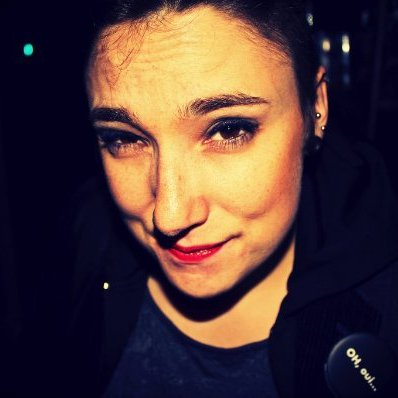
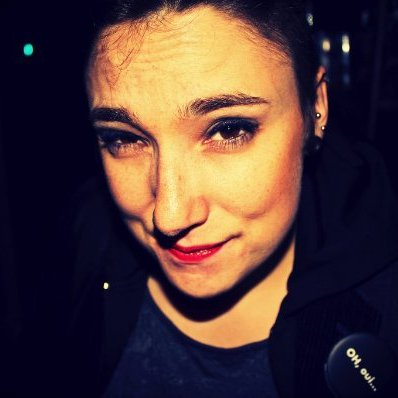
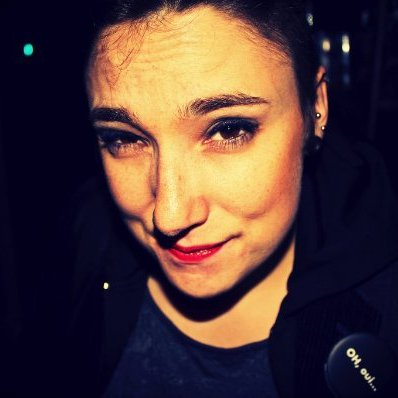
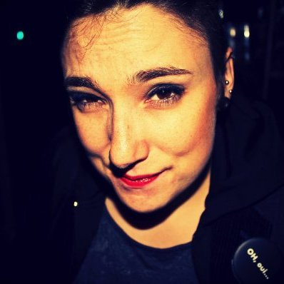
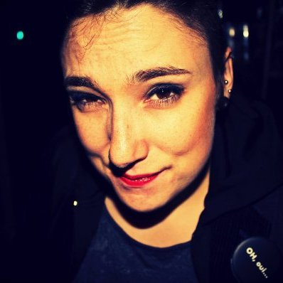

A travers ces quelques pages et interviews vous trouverez diverses informations concernant les avantages et inconvegnients de ces métiers. J'ai eu la chance de pouvoir rencontrer des gens de milieux differents qui en sont a différents stades de leur carriere. C'est pour cela que j'ai égalment décidé de d'interviewer des stagiaires Becode issus de la promo 1. Cela me permet d'obtenir une vue global de l'evolution des competences et du ressentis en partant du premier stage.

J'ai d'abord commencé par me créer un réseau sur LinkedIn, cela va vite au final. En quelques jours il est possible de se créer une base de contacts suffisament solide pour cet exercice. Ensuite j'ai démarché toutes mes nouvelels relations a l'aide de l'outil Google Form.